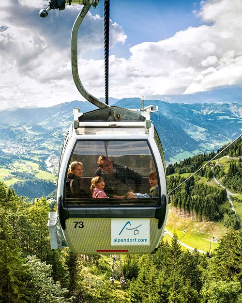
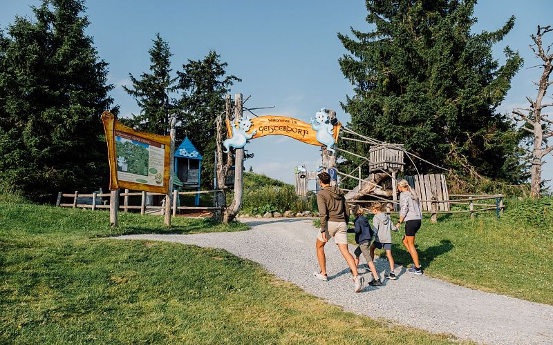
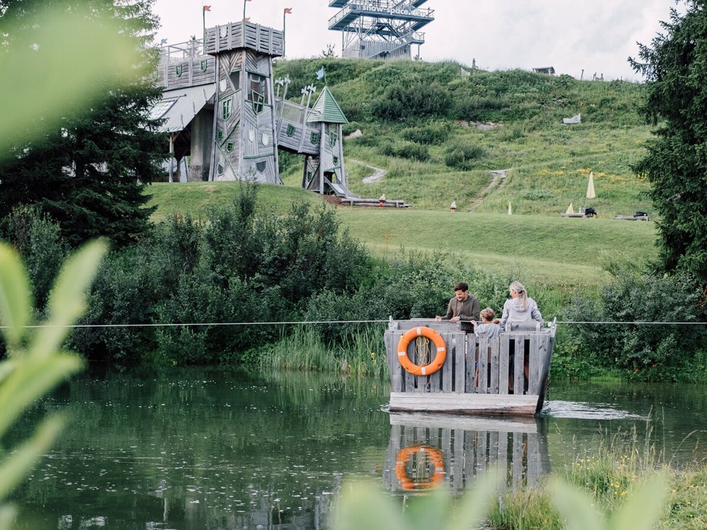

Výletní tipy s fotkami
Den 1: jezera v Itálii · Den 2: Wagrain — lanovka a dětský park · Den 3: soutěska/jeskyně + Salzburg → domů do Kdyně
Laghi di Fusine (Fusine Lakes), Tarvisio


Plochý 2km okruh kolem horního jezera (~45 min), nádherná scenérie pod horou Mangart. Ideální zastávka cestou z Itálie do Rakouska, bez velké zajížďky.
Geisterberg, Alpendorf (St. Johann im Pongau)




40 dobrodružných herních stanic na horské louce — přesně pro váš věk dětí (8–12 let).
Jak to tam funguje, na jak dlouho počítat a cena pro 2 dospělé a 6 dětí
Snow Space Salzburg je společný web pro tři střediska (Flachau, Wagrain, St. Johann-Alpendorf) — proto se zdá, že je tam víc lanovek. Pro St. Johann/Alpendorf je to ale jen jedna gondola (Alpendorfbahn / Panoramabahn).
Dole: údolní stanice v Alpendorfu. Nahoře (Gernkogel, 1767 m) je celý park Geisterberg — dole u údolní stanice žádné atrakce nejsou.
Nahoře: 40+ herních stanic (vesnička, jezírko, hrad, vodní hry, lezecké věže, houpačky, skluzavky), dětská via ferrata Drachis, a hádanková stezka s maskoty-duchy Gspensti a Spuki.
Pěší túra: ano — 5km zážitková a herní stezka z horní stanice až na vrchol Gernkogelu, nebo si část zkrátíte zdarma "duchovním vláčkem" (jede každých 30 min přes chatu Buchauhütte, jízda ~15 min). Alternativní trasa přes Buchauhütte na Gernkogelalm je sjízdná i s kočárkem.
Na jak dlouho počítat: gondola nahoru trvá ~10–15 min, pak dalších ~15 min na duchovní vláček/chůzi do srdce Geisterbergu. Na samotné atrakce a stezku počítejte minimálně 3 hodiny, s klidem tam ale klidně strávíte 5 a více hodin — dá se z toho udělat klidně celodenní výlet.
Provoz 2026: cca konec června – 8. 9. denně 9:00–17:00, pak do poloviny října jen vybrané dny. Vstup na Geisterberg i jízda duchovním vláčkem jsou v ceně jízdenky na gondolu.
| Na místě | Online předem | |
|---|---|---|
| Dospělý (15+) | 34,50 € | 29,00 € |
| Dítě (6–14) | 20,70 € | 17,40 € |
| 2 dospělí + 6 dětí | ~193 € | ~162 € |
Rodinná výhoda: 3. a každé další dítě ze stejné rodiny jede zdarma (na pokladně nutný doklad o příbuzenství/rodinná karta) — pokud se na vás vztahuje, cena klesne na cca 93–110 €. Vyplatí se ověřit přímo na pokladně, jestli uznají i více dětí z širší rodiny/sourozenců napříč domácnostmi.
Liechtensteinklamm


Působivá soutěska s lávkami vysoko nad divokou vodou a vodopádem na konci — jedna z nejznámějších klamm v Rakousku, skvělá i pro děti.
Parkování, doba průchodu a otvírací doba
Parkování: podél Liechtensteinklammstraße jsou 4 oficiální parkoviště (P1–P4, včetně místa pro autobusy), všechna zdarma. Nejbližší parkoviště u pokladny se plní nejrychleji — nejlepší šanci na místo tam máte brzy ráno nebo pozdě odpoledne. Pokud je plné, zaparkujete na P1–P4 kousek dál a dojdete pěšky.
Doba průchodu: čistá chůze od pokladny k vodopádu a zpět trvá cca 1,5 h. S cestou od parkoviště k pokladně a časem na nákup lístků počítejte celkem s cca 2,5 h. Soutěska nemá okruh — zpátky se jde stejnou cestou.
Otvírací doba 2026: začátek května – 30. 9. denně 9:00–18:00 (poslední vstup v 18:00), 1. 10. – 31. 10. denně 9:00–16:00. Přes zimu je klamm uzavřená.
Eisriesenwelt, Werfen


Obří ledová jeskyně s ledopády a ledovými útvary, přístupná lanovkou a pak vede prohlídka s průvodcem po dřevěných schodech a plynových lampách. Silný zážitek pro děti, ale je tam chladno (vezměte bundy) a prohlídka s chůzí trvá cca 1,5 h. Leží už na cestě směrem k Salzburgu (na rozdíl od Liechtensteinklammu, který je přímo u Wagrainu) — buď